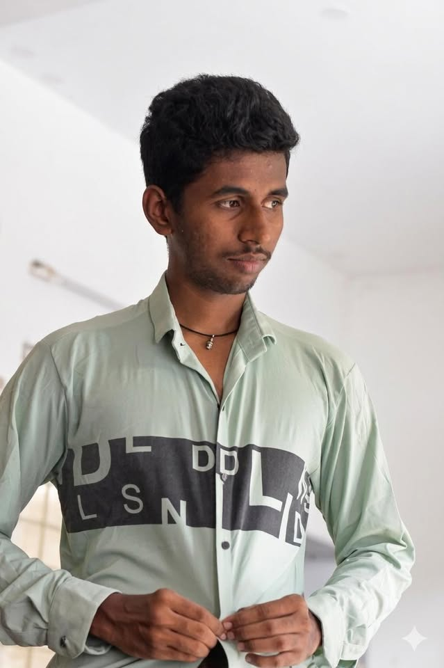

B.Tech Electrical Engineering student at IIT Tirupati. Specialized in high-reliability aerospace avionics, custom PCB layouts, bare-metal hardware registers, real-time operating systems (RTOS), and active control feedback loops.
Deep dive into custom telemetry acquisition setups, 32-bit Teensy 4.1 flight computers running multi-threaded FreeRTOS, dynamic thermocouple health monitoring, and custom PCB routing.
A high-performance Unity-powered 3D mobile game developed during the pandemic. Highlights custom Blender models, event-driven C# rigidbodies physics, and drawing reductions.
Designed and fabricated a modular flight computer around the **Teensy 4.1** system. Integrates redundant barometric apogee indicators, QSPI flash loggers, external watches, double-sided FR4 layers, and parachute pyrotechnic deployment circuits driven by PlatformIO core.
Engineered custom telemetry acquisition systems for rocket motor test burns. Employs a robust **Arduino Mega** coupled with an **ESP8266** serial bridge to broadcast 10 Hz CSV logs over wireless Telnet connections. Equipped with hardware safe-arm switch relays.
A two-wheeled inverted pendulum robot built on the Shrike Lite RP2040 dev board. Implemented cascaded PID controller blocks in MicroPython, fusing IMU registers to compute pitch angles. Upgraded with real-time Wi-Fi telemetry and remote calibration loops.
Developed firmware blocks on an **nRF52 SoC** utilizing the **Zephyr RTOS** framework. Configured hardware interrupts to pull vital biometric sensor data and broadcast frames using Bluetooth Low Energy (BLE) peripheral notification channels.
Wrote a robust custom hardware abstraction library from scratch in bare C for **STM32** cores. Directly configured system clock trees (PLL/HSE), GPIO registers, hardware watchdog timers, and hardware timers without relying on vendor HAL tools.
Implemented custom firmware mapping a physical STM32 chip to enumerate as a hardware keyboard/mouse on a host PC. Conducted study of USB specifications, descriptors, setup packets, and standard HID report descriptors.
Co-engineered processing models and watchdog routines for satellite telemetry structures.
Co-developed early prototype flight computer layouts and static calibration frameworks.
Collaborated in custom freelance teams modeling assets and designing event matrices for 3D Android gameplay.